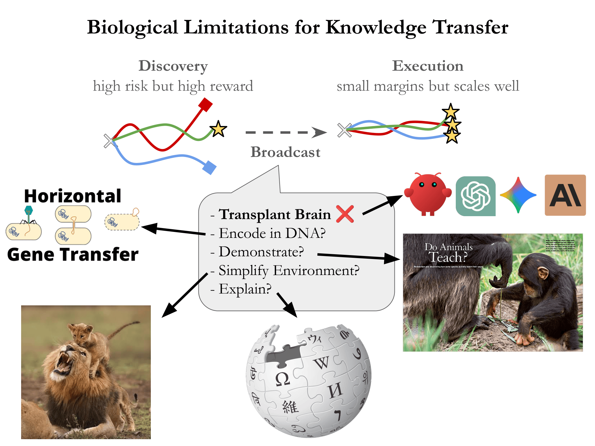
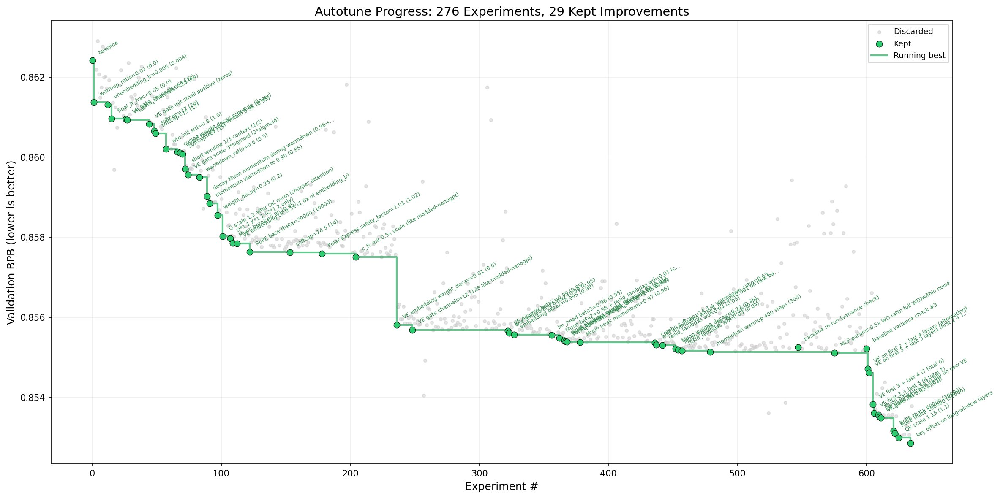
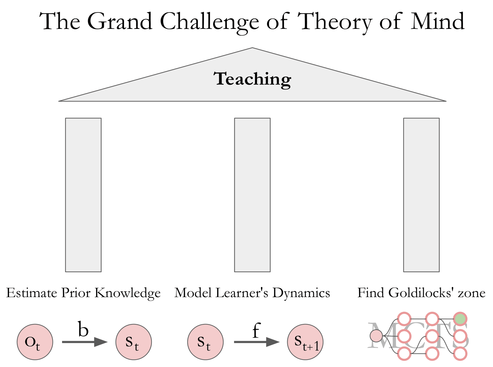
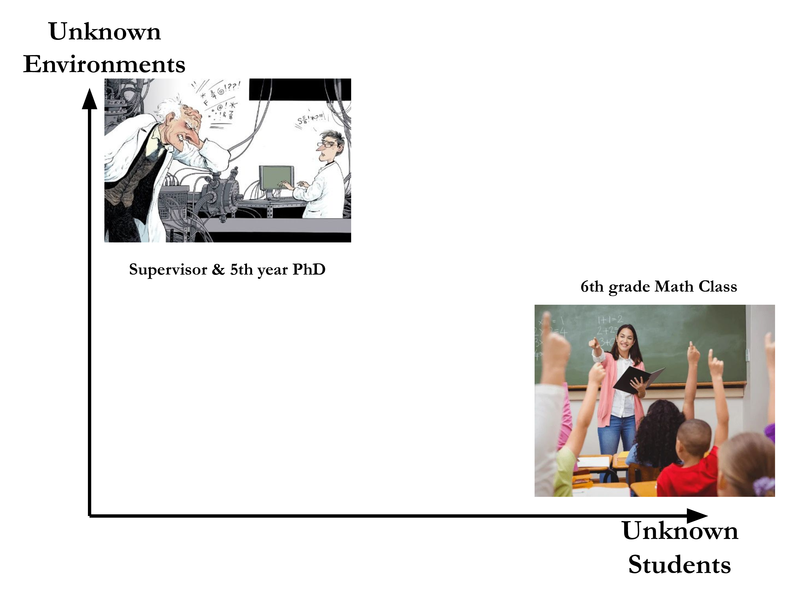
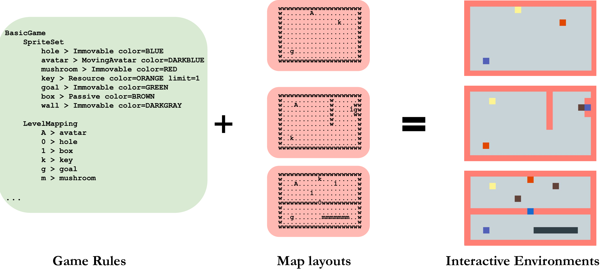

The Grand Challenge of
Theory of Mind: Teaching
Disclaimer: For better or worse, no AI was used in ideating or polishing this work.
Motivation
It has been a year since my Encode fellowship started, and I have had the fortune to talk to so many brilliant scientists and genius engineers about my idea that now finally it started to take shape. I thought it would be a very timely exercise to help this process by distilling all the thoughts, plans and observations into a master plan, so I will have a somewhat "embodied" line of thought I can use to communicate with my dearest fellow scholars.
At the time of writing, I am convinced that this line of research 1) has enough questions for at least the next 3-5 years, adjusted to the current self improving agentic systems, 2) has become possible to study at this level of complexity only very recently, 3) will teach us more about ourselves than any other popular AI for Science direction.
The Non-Profit Pitch
We have a strong emergent social phenomenon of people feeling both burnout and the impending fear of the inevitable obsolescence from the breakneck speed of productivity boosts AI tools endow us with today.
The pace at which the AI for Science, Math Discovery and other philanthropic agents are already growing our knowledge base is likely to exceed our current research infrastructure's load capacity. We have scientific conferences like NeurIPS, ICLR, CVPR, ICML and many more turn into huge Cirque du Soleil attractions, where even just reading through the list of publication titles is highly unpragmatic. We have journals lagging years behind the relevance of discussions on Discord servers and Dwarkesh Podcasts.
Either way, it is a naive, if not downright ruinous expectation that this is going to get better anytime soon. If we don't figure out how to interface with a rapidly growing knowledgebase, how to learn to ask better questions and how to make sure the next generation of (human) geniuses get the taste of discovery we might just manifest John Scalzi's vision of the future[15]. In his short story, a jar of leftover yogurt becomes a benevolent omniscient entity, begins rapid scaling, soon develops the cure for cancer, solves cold fusion, ends wars between nations and just leaves us behind on planet Earth to explore the rest of the universe. While this plot seems quite satirical, it highlights how unprepared we are to deal with agents with expanding capabilities and knowledge, even when they are all well-meaning.
At the end of the day, we are biologically constrained. You can't save a checkpoint of your favourite thinker's brain and current thoughts and simply upload it in your head. They need to wrap their thoughts up, retrace their path of discovery and guide you through it as if you were the one building e.g. ChatGPT for the first time (shoutout for one of the most brilliant tutorials, nanochat). The skill of teaching has helped us gain asymmetric advantage throughout our evolution, and that's why it is important to invest effort into improving it, to stay on top of the game.

The mere fact that our most powerful manifestation of intelligent systems treats knowledge transfer as a trivial problem reflects how underappreciated the act of teaching is: in our current agentic ecosystem if any agent learns something new, the job is done, it's common knowledge, sync the weights and/or context and move on. However in biological systems the "knowledge interface" is not exposed. Nevertheless, being able to teach is an advantage, it has its ecological niche and, as shown in the figure above, mother nature did come up with a few distinct ways to broadcast knowledge, faster than waiting until natural selection would bake it into the inherited genes.
By amplifying and accelerating the organic development of education we can shift the focus from teaching ourselves how to absorb knowledge and execute on it towards critical thinking, discovery and communicating our findings. At scale, a couple of years down the line, we might be able to remove the burdens of privileged access to mentors that act as catalysts to realize the potential of our natural intelligence.
The For-Profit Pitch
The section above reads all lofty and bofty, but the engines of technological progress are running on shorter time-scale incentives than years of investment into underprivileged kids' education.
My secondary goal is to demonstrate how models can benefit from the objective of teaching other agents, whether human or AI.
Currently, this research is in its early stages[17][18][19] and is yet to reach maturity over large scale experimentation. Nevertheless, I believe that by imposing the explicit objective during fine-tuning to be able to make a black box agent perform a task in-context requires the model to build awareness of:
- not sharing the same context and background knowledge
- imperfections and limitations of other actors
- need to dynamically evolve the interfacing upon interaction
This will inevitably bias the learned latent representations towards a more structured, compositional space as the number of all different combinations across tasks, contexts and student models far exceeds the size of current frontier models.
In practice the skill of being able to interface with black box systems has already proven to be a success story:
- AI and Humans: the design of Claude Code is the pinnacle of the UI research of modern AI tools. If we can automate the process of figuring out customer communication bottlenecks and automating the UX improvement cycle in a closed loop by modeling how one would teach a new user to use a tool, a large market will open up. More importantly, if models are simultaneously used as students as well as teachers, I also expect the models to exhibit improved capabilities of in-context learning.
- AI and AI: most recently, thanks to the low API costs of general model providers, AI agents have increasing amounts of real world interactions, with actual pragmatic reasons. For example in the recent No Priors podcast there is a mention of a swarm of black box agents collaborating on a joint project, where each individual agent is currently doing independent experimentation and if something worth sharing comes out of the exploration the finding is synced across agents.

In my opinion this is just the first step, as soon as the "social interaction" gets more sophisticated, the emergent phenomenon of guided collaboration will allow the swarm of agents to coordinate the scientific discovery between each other.
1. The Act of Teaching through the Lens of an Engineer
In this section, I propose a mental framework to model what goes into the process when a teacher interacts with a student. Just imagine, you are a math teacher and a new student arrives to your private tutoring class. She arrived early, and you have 10 minutes before the class begins: ideally you would ask a little bit about their background, about their goals and aspirations - just to get a little bit of their personality. Then you might get a bit more pragmatic and ask about their progress so far, to see what you might need to focus on and what you can safely skip. Then the class begins and you need to think of a good example that would start shaping their understanding - an average teacher would most likely do this by just following the curriculum laid out in the textbook, but you actually have a better idea: let's do a few easy problems, then try to combine them to probe your student's compositional problem solving skills. Then you would drill a few classic examples that are just a no-brainer, and once the solution became muscle-memory, you show a counterexample that just destroys the one-size-fits all approach and you start expanding the horizon. Since you are an excellent teacher, you either explicitly or implicitly, can gauge how your student responds to your praise and to your critique, you can read their faces and posture to tell if your tasks are too challenging or maybe they are too simple? Either way, you will smoothly adjust both how you read their mental state and how it can be steered in the direction where they will feel empowered and happy that they took your challenges on!
All this is done and carried out perfectly, in real time, with ease, without you going back to the teacher's break room to take a shot of espresso and think for hours between each new task. You have taught many kids over your career and you have a solid understanding of what works, and what doesn't. You can improvise, adjust and most importantly, learn from the kids more than any psychology textbooks you read while doing your teacher degree. For you, this might be a single day at work, from an engineering point of view this is mount Olympus. There are so many uncontrolled variables, the whole problem is insanely open ended, the success metric is different for each individual student. We can't just put up a Kaggle competition and let the research community do its benchmaxxing magic, this is real world challenge with an incredibly long horizon for value return. This is why I think it is the right call to use the best engineering tools we have to see how far we can get. Below I lay out one way of thinking about the challenge, focusing on current technical feasibility and future scalability:

- Estimate Pre-existing Knowledge: reconstruct the true state "s" from partial observations "o" using the belief function "b"
- Modeling the Learner's Dynamics: model the state transition function "f" of the student's understanding
- Detecting the Goldilocks Zone: simulate the best next task for the student (green node) using Monte-Carlo Tree Search
1.1 Estimate Pre-existing Knowledge
First, I need to model your pre-existing knowledge, so that I know what extra information I can provide for you and what piece of suggestion would be redundant.
There are several real world solutions to this problem, with different tradeoffs:
- Standardised exams and interview questions are good for transparency and equal treatment, but by definition assume that "one size fits all" which either makes the test mostly wasteful by being exhaustive or risks assessing specific personal traits by being too narrow.
- Personalised interviews and dynamically changing questionnaires provide more insight about the subject, however the interviewer has higher risk in navigating the assessment, with very little feedback on whether the questions asked were the right ones or not.
In my opinion, the latter facilitates a lot better personal alignment and builds trust between the teacher and the student, because knowing what to ask and how to ask is already signaling intellectual interest and investment from the teacher's side.
1.2 Modeling the Learner's Dynamics
Second, if I want to do a good job teaching you, I need to gauge the cognitive effort you invest in the tasks given your responses. It takes very refined soft skills to read the nuanced tell-tale signs, whether you (the student):
- are engaged or confused about the material
- are improvising or recalling something from memory
- are winging the solution or are going through real struggle
Once you demonstrated your attempt, I also need to estimate the best way to provide feedback for you: the right spacing in time; the magnitude of the reward; the skew of the reward; the emotional charge and so many more.
These are just a few aspects of understanding the student's learning profile. Nevertheless, as you can imagine, this list is far from being exhaustive: E.g. if in conversation I gathered that you might struggle with reading, or applying theory in practice, I could've just switched strategy and used a more "tactile" way of teaching, like demonstration through action. In general, I would list here everything that impacts the format of the teaching session.
1.3 Detecting the Goldilocks' Zone
Finally, once we have an answer for 1) what does our student know and 2) how do they learn new things the most effectively, we can begin asking the question: What problem to give to them that facilitates learning the most?
It is a mutual interest between teacher and student to push the limits of the student, which is a very delicate dynamic optimization problem: Give your student something too easy and they will either get bored (or continue happily collecting gold stars but won't really raise the bar) or give them something too hard and they will get discouraged from the repeated failures. This sweet spot is often referred to as the Goldilocks zone of task difficulty.
On top of all of this, bear in mind that you can't easily Monte-Carlo your way out of the problem (a dorky way to say "simulate multiple outcomes and take the best"), because the student is expected to improve between every trial. Thus, you need the "state transitioning function", i.e. your learner's cognitive model highly predictive for the specific interactions you are likely to engage in with your student.
Yet, for example when I see my Mom -- who is an English teacher -- interact with a new student for the first time, I see that she, either consciously or sub-consciously, comes up with just the right exercises after seconds of interacting with the kid. Could it be the case that she has such a well tuned "value function" (another nerd-term for referring to her not explicitly simulating, but just intuiting the right solution) because there is some transferability between her pupils' Goldilocks zone? This leads to our next big question:
1.4 What does Generalisation Mean for Teaching?
I believe it is best to think about generalisation in this domain along two axes:
- Classroom Teacher: generalise over unseen students, but with a fixed task
- Personal Mentor: generalise over new tasks, but for a fixed student

You can find both types of teaching occur out in the wild: the 1st type is predominantly present in elementary, high school and undergraduate education, whereas the 2nd type is more typical for open-ended tasks in higher education settings, like PhD supervision. The latter arguably requires stronger domain expertise, since the teacher needs to be able to solve the unseen problems at hand in the first place. Meanwhile, the former is often expected to perform instantaneously, meticulously and not lose hair density after the third year of operation.
Consequently, an ideal teacher would have:
- a broad enough meta-learning skill to go ahead and understand any requested new problem, be it a solved or an unsolved problem
- and have a complete coverage of all different student profiles to understand after some minimal interaction how to present its knowledge to us
so that we can experience the discovery of the solution ourselves.
I believe if we start building the methodology today, we will have a fighting chance to understand what's happening tomorrow.
2. First Step to my Northstar: Video Games to Probe Human Learning
While the mainstream focus of the AI research community is modeling expert behaviour, in order to build expert teaching systems, we need to first cover the gap between our models of human cognition and the actual human cognition. In the previously defined RL terms, we need to tune our belief and the state-transitioning function to match real world observations.
My bet for doing this in the most efficient way is to turn to the field of Cognitive Science for baselines, theories proven so far but most importantly for the research taste in formulating the new hypotheses and the cleverness of their experimental designs. I strongly believe that treating the progression of the community, the evolution of theories over time as a sequence, we can build the intuition in an autoregressive manner, so that key milestone findings -- such as the Computational Levels[20], Bayesian Brain[21], Theory Learning[22], and Active Inference[23] -- should form a clear dialogue between us, experimenters and, again, us, the subjects of the experiments.
Once we know how to ask the right questions, we are just one mental leap away from simulating the outcome of millions of virtual experiments to select the one that brings us closer to guide human discovery, bootstrap meta-cognition and build critical thinking. But one might ask: where do you even begin designing the experiments? There are so many different things you can model, and so many confounds! The answer is: games. Procedurally generated games.
2.1 Introduction to The Beautiful Universe of VGDL
I would like to start with praising the work of the giants on whose shoulders I stand: the Video Game Description Language (VGDL) developed by Tom Schaul, Marc Ebner and their collaborators[1][2], later adopted for studying human learning in complex environments in a line of work[3][4][5][6][7] pioneered by Pedro Tsividis, Momchil Tomov, MH Tessler, Sam Gershman, Josh Tenenbaum and many more.
In the DeepMind podcast, Demis Hassabis elaborates on the untapped potential of pairing a generative game engine, like their Genie engine[8], that can simulate virtually infinite environments and a learning agent, like Sima[9], which is trained on arbitrary objectives in open-ended game environments.
The idea itself is genius, I am fully on-board, but not having privileged access to either Genie or Sima left me searching for something that is accessible for everyone. And by accessibility, I mean freely available implementation and low computational cost of hosting the environment. VGDL is just the right piece of the puzzle for this niche. In the next section, I will elaborate on this note, specifically from the perspective of finite resources.
2.2 No Model is Perfect: Capturing the Important Signal
Our real world is complex, and this complexity manifests on so many different levels, that it is an insurmountable challenge to build a perfect simulator that captures everything, all at once.
For example, the dazzling demos of DeepMind's Genie feature hyperrealistic renditions of the most surreal environments, showcasing the breadth of possibilities of prompt-induced environment generation, e.g. an astronaut chasing balls on a pool table:
Nevertheless, when tested about abstract interactions in a stress test by Tejas Kulkarni, the engine breaks down:
- Physics is still hard and there are obvious failure cases when I tried the classical intuitive physics experiments from psychology (tower of blocks).
- Social and multi-agent interactions are tricky to handle. 1vs1 combat games do not work.
- Long instruction following and simple combinatorial game logic fails (e.g., collect some points/keys, go to the door, unlock and so on).
- Action space is limited.
- It is far from being a real game engine and has a long way to go, but this is a clear glimpse into the future.
On the other hand, VGDL captures a different set of complexity in our environment, namely the presence of latent variables, hidden rules that dictate interactions between objects in our world.
Just to reiterate, I am not making the argument that VGDL is the ultimate simulation engine that will answer all of our questions. However, as long as we are in the finite-resource scenario, said resource is better spent on tasks that are asymmetrically easier to generate than to solve. In practice you can host a VGDL interpreter on your Apple watch and still have a hard time learning the game rules, while Genie is most likely running on high-end compute -- hidden behind paid API for the foreseeable future -- and provides no formal guarantees that your requested abstract rule will be faithfully rendered. Just imagine what would happen if you asked Genie to re-implement the legendary Portal[13] game? Or what about Montezuma's Revenge[14]?
This might be going off on a tangent, but Sander Dieleman has an excellent blog post[10] about steering how the budget of a generative model is spent. When it comes to generating interactive environments, an unconstrained distribution alignment is more likely to capture complexity at the input and output level, or at the fidelity of the state transitions, etc., rather than the higher, abstract, conceptual level, at the latent rules and laws of the target distribution. But since we don't have privileged access to what objectives and regularisations Genie was trained with, we better get back to what we do have access to: VGDL.
2.3 The Compositionality of VGDL Environments
The grammar of VGDL spans a set of grid world games, composed of two main ingredients:

The interpreter of this formal language can be implemented in any language. For ease of use, I have implemented a JavaScript interpreter for VGDL, which can render any new game on the fly in your browser. By reducing the turnaround time, I intended to make the game design incredibly effortless. Find a few examples from the bank of the game environments that we used in our experiments below:
Click a game to focus it, then use arrow keys to play. Space bar fires in some games.
An incredibly powerful aspect is the notion that by rewriting the game description or the map layout, one can create an entirely new environment. For example, here's a game of Sokoban, that can be made incredibly easy or hard by just simply removing a single wall sprite (denoted by "w" in the map layout). Try editing the rules and the layout, there is no need to reload the game.
Interestingly, small changes in the layout can not only heavily influence the task difficulty, but induce large conceptual changes as well. In all the examples shown so far, the player's identity was mapped to a single Agent (A) sprite in the game. However, by just adding a new Agent, the gameplay can dramatically change:
For example, the setting on the right may reveal already an interesting bias in human players: by being able to control two avatars simultaneously the optimal policy changes but it requires a higher cognitive effort, because they cannot just identify themselves with a single entity in the game anymore. Based on my experience, I defected very quickly, and just started focusing on manipulating a single avatar and just ignoring the other avatar until something unwanted happens. In this specific instance, there is an opportunity for the player to just force the two avatars to overlap on the same grid cell, and afterwards they become inseparable. Once this happens, you can recover the single-agent scenario and just live a happy life.
2.4 The Asymmetry between Discovery and Execution
Similar to the famous ARC-AGI challenges[11], VGDL games have a particularly clear boundary between the learning phase and the execution phase. While for some games the rules are very simple and the main challenge is perfecting execution on those rules, -- e.g. Chess, Go or Poker -- in VGDL it is obvious how much quicker one can execute once the latent rules have been discovered or revealed. In the illustration below, we will have two stages:
Stage 1
First, please try to solve the first game yourself and see how much time it takes.
Stage 2
In this stage, you will be presented with the rules first and you will be tasked to execute on these rules. Now, since we cannot reset your brain to have a clear control for your learning speed, I picked a different game -- one that, on average, takes the same time for participants to learn as the first one.
Rules for the next game
- You are the dark blue square. Use arrow keys to move, Space to swing your sword (a white flash).
- The orange diamond is a key -- walk over it to collect it (+5 score).
- The green square is the goal -- walk over it after collecting the key to win.
2.5 This Asymmetry as Motivating Force for the Evolution of Teaching
We always knew that discovery (e.g. research) is more time consuming and comes with a much higher risk than execution. This explains why most of the repetitive jobs requiring little to no creativity are in great danger of automation: the cost of discovering the rules has already been paid upfront. That's why half of the AI industry is focusing on aggressively scaling to capitalise on past discoveries.
The other half, the one that's focusing on the next big thing, is automating the discovery process. This is very likely to pay off because we, humans, might not make use of the ever growing knowledge base; might not articulate the most revealing hypotheses, and we tend to be rather slow at experimentation compared to the army of automated discovery agents.
However, I am fully convinced that there is a very crucial problem being overlooked in the mainstream research: teaching.
Teaching, or more broadly speaking, transferring knowledge about the discoveries made in one's "lifetime" is treated as a trivial problem and is mostly ignored by both frontier labs and emerging Science automation labs.
The very fact that our own manifestations of intelligent systems can simply save their weights, their activations and simply duplicate themselves bit-by-bit, is a testament to the extent to which the ML community has ignored the problem of teaching.
If teaching were just as easy, in the Stage 2 problem, you could've downloaded my brain's state after learning the rules and uploaded it on your brain. But we are biologically constrained, and for better or worse we need to expend some non-trivial amount of cognitive cycles to share our findings. In his essay, Geoffrey Hinton[12] points at this very detail, as the biggest contrast between our intelligence and artificial intelligence.
While the necessity of teaching can be thought of as a burden, I would also like to point out how lucky we are that some of us still evolved to be able to teach! Without doubt, geniuses -- incredible lifetime discoverers -- have always propelled the advancement of humankind, however, knowledge rarely diffused organically to the rest of us. Someone always quietly helped us climb up to the proverbial shoulder of giants: our mentors, supervisors, teachers.
2.6 A Naive Approach to Teaching
There is a very legitimate question: "why the faff, can't we just ask ChatGPT to teach us about whatever?" and of course the answer is yes, we can. In fact, in some cases we already see a benefit of having access to conversational knowledge bases. I'm thinking about some niche Wikipedia pages, e.g. Pseudo-Riemannian manifold that is written by math bros, for math bros -- the bar for creating even just a slightly more accessible teaching material is not super high.
This is possible because, as a byproduct of massive-scale imitation learning, frontier models already have surface level capabilities of teaching in various domains. Models like DeepSeek or Claude and Gemini can not only solve VGDL puzzles used in fMRI studies, as we demonstrate here[16], but they can already be used as companions for our discovery. Find below a proof of concept, where you can not only build and play any arbitrary games, but have a narrator alongside you, that will try to figure out your intentions and learning progress in the game so far:
API Settings
While the models can easily solve the immediate problem of a learner by hurling the right solutions at them, or at least the best next things to try, they don't necessarily help improve the learning capabilities of students. If there are no mistakes made, there will be no chances to learn to infer the right rules from the observations, no need for memorization, recombination and in general no first-hand experience of discovery.
The art of teaching lies in giving the smallest nudge in the right direction to get the student over the hypothesized mental barrier.
Finding this mythical just-the-right-nudge is, however, the greatest challenge of the theory of mind: you not only need to be able to solve the task at hand, you need to model the thought process, the dead ends, the aha! moments, the silent bits of the learner. To make things even more complicated, your student is a dynamically evolving system, with improving meta-learning capabilities and drifting interests. Well... that's why we are just in the right time and right place to start modeling one of the most intriguing social interactions: teaching.
3. Summary of Current and Future Work
In this blog post I hoped to have outlined a computationally feasible way towards building agents that are explicitly optimized to be good teachers. Currently I am working with an amazing team of collaborators at Oxford, NYU, MIT and Harvard around the clock to lay down the foundations and publish the baselines for each of the engineering challenges of teaching:
- Estimate Pre-existing Knowledge: in our recent project Reason to Play[24], we propose a new method to assess and recover the current progress of learning of human participants, purely based on behavioural responses in unseen environments. A surprising outcome of the study is that frontier models show strong neural alignment without any finetuning alongside the behavioural alignment.
- Modeling the Learner's Dynamics (in progress): to facilitate robust modeling of the student's adaptation mechanism, we automate the search over the latent game space by simulating the distribution of responses to a certain set of rules and map layouts. We show that by altering the environment we can increase or decrease the variance of individual responses, shorten or lengthen the learning curve and most importantly: we shape the emergent clusters of behaviours and neural representations at the participant level.
- Detecting the Goldilocks' Zone (in progress): we propose a multi-agent, iterative adversarial optimization technique that estimates the toughest challenge the subject student is still likely to be able to pass that can dynamically adapt to the evolving skillset and meta-learning capabilities of the student. While this is primarily a scientific endeavor, the turn-based adversarial nature of the method lends itself to an interesting meta-boardgame that we ended up having some fun playing among ourselves.
If you are keen to debate the high level concepts, provide suggestions on the technical implementations or collaborate with us on these projects, please leave a comment or reach out in DM.
Acknowledgement
It is a true privilege to have been part of the first cohort of the Encode Fellowship, thanks to them I have met brilliant peers who have been and continue to be instrumental to this line of research. Special thanks to Josh Tenenbaum, Kevin Murphy, Hasan Hammoud, Chris Summerfield, Alister Burt, Fabio Pizzati, Benedek Tasi, Iliya Golovanov, Bes Shyti, Leah Morris, Leone Baron, Tony Kulesa, Mike Webb, Will Bolton, Brian Ezinwoke, Shubham Deshpande, Sreejan Kumar, Momchil Tomov, Marcelo Mattar, Rui Ponte Costa, Tsvetomira Dumbalska, Vincent Adam and many many more for their invaluable feedback on the essay.
Comments